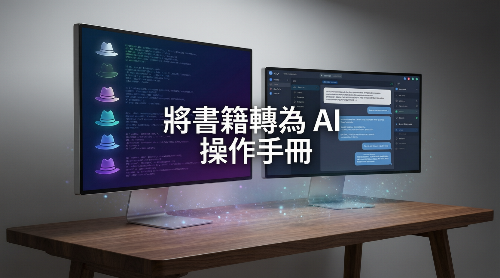

在知識迭代呈指數增長的數位時代，傳統閱讀模式正面臨留存率低與實務轉化難的雙重挑戰。本次報告深入剖析如何將經典思維框架系統化轉譯為人工智慧操作手冊，重塑結構化學習與決策演練的新路徑。

研究指出，現代專業人士在面對海量資訊時，往往陷入資訊碎片化與知識留存率低的困境。由於大腦需同時處理數據驗證、情緒判斷與邏輯推演等多重任務，極易引發認知負載過高。傳統線性閱讀模式難以將抽象理論直接對應至現實決策場景，導致學習成果難以轉化為實際生產力。
數據顯示，將複雜思維框架拆解為獨立運作模組，能有效降低認知門檻。業界觀察認為，各領域從業者正積極尋求將紙本知識轉化為可立即執行的數位工具，以應對潛在的自動化技術衝擊，並提升個人職場競爭力。
本次報告詳細說明，經典思維工具已將混雜的認知過程切割為六個獨立頻道，避免多工處理造成的思緒混亂。專家分析指出，明確界定各頻道職責，可大幅提升團隊協作效率：
此機制不僅能大幅降低團隊溝通時的防禦心理，更能促使討論回歸問題核心，實現高效決策。
本次報告特別強調，該框架在設計上刻意將情感直覺與最終裁量權保留予人類使用者。此設計印證「人機協作」的合理分工邏輯：人工智慧擔任思維擴充與多維度推演的輔助工具，人類則負責價值判斷與戰略決策。
將上述思維模型轉譯為 AI Agent 的標準化操作手冊，實質上是為人工智慧系統建立明確的工作流程與角色扮演規範。當核心邏輯與執行參數導入系統後，人工智慧即可依設定無縫切換不同視角，協助進行高擬真情境模擬。針對尚未建置專屬智能體平台的使用者，專家建議可直接運用大型語言模型的自訂指令功能，將結構化邏輯轉為系統提示詞，即可實現低門檻的實戰推演。
研究指出，此學習路徑顛覆過往「閱讀至背誦」的單向輸入，改以「提問至驗證」的閉環機制，推動知識接收者轉型為問題解決者，顯著提升知識遷移率與跨領域應用彈性。
隨著生成式模型技術持續迭代，業界觀察預測知識管理將全面由「靜態儲存」邁向「動態互動」。企業培訓與個人進修將高度依賴情境模擬與人工智慧輔助決策系統。本次報告建議，學習者應優先培養將抽象理論轉化為結構化指令的能力，並嚴格將智能體定位為思維教練。
專家分析進一步指出，唯有結合人類獨有的情感洞察與戰略判斷，方能於自動化浪潮中建立不可替代的專業護城河。機構應及早導入互動式學習框架，以優化組織敏捷決策能力，實現終身學習的實質效益與長期競爭優勢。